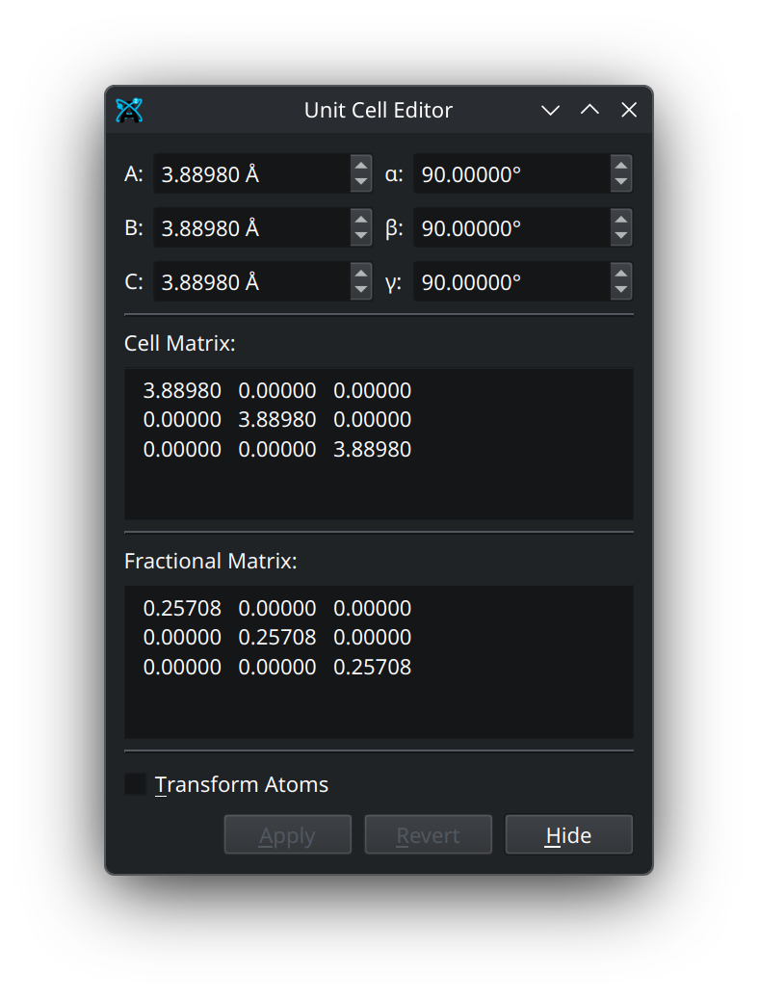
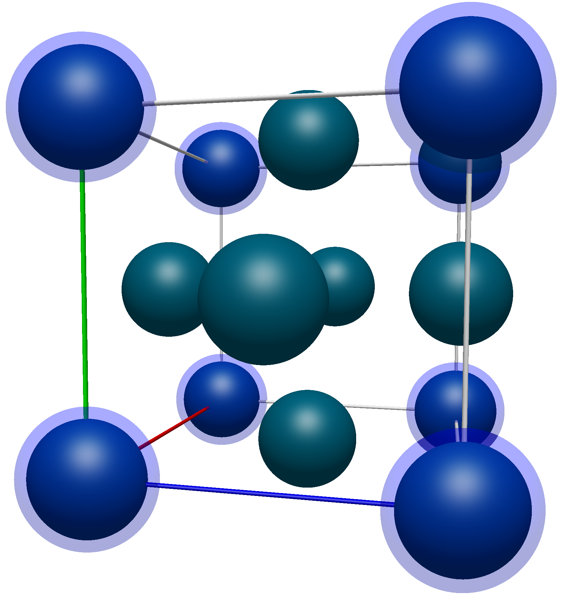
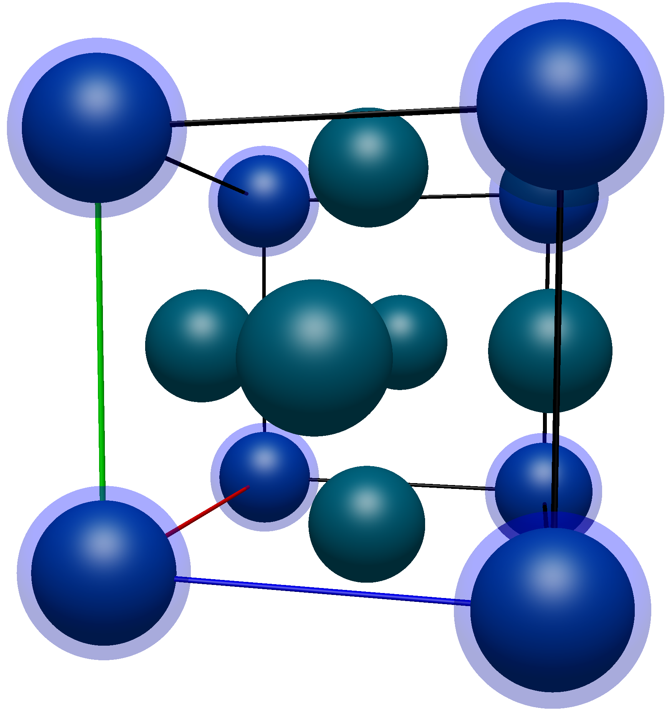
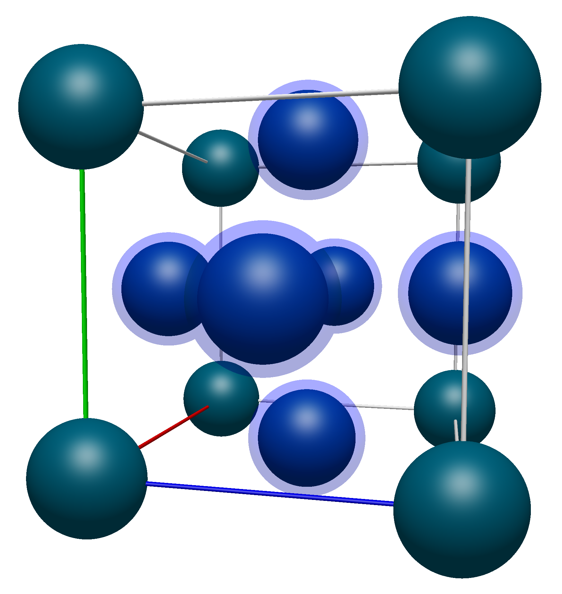
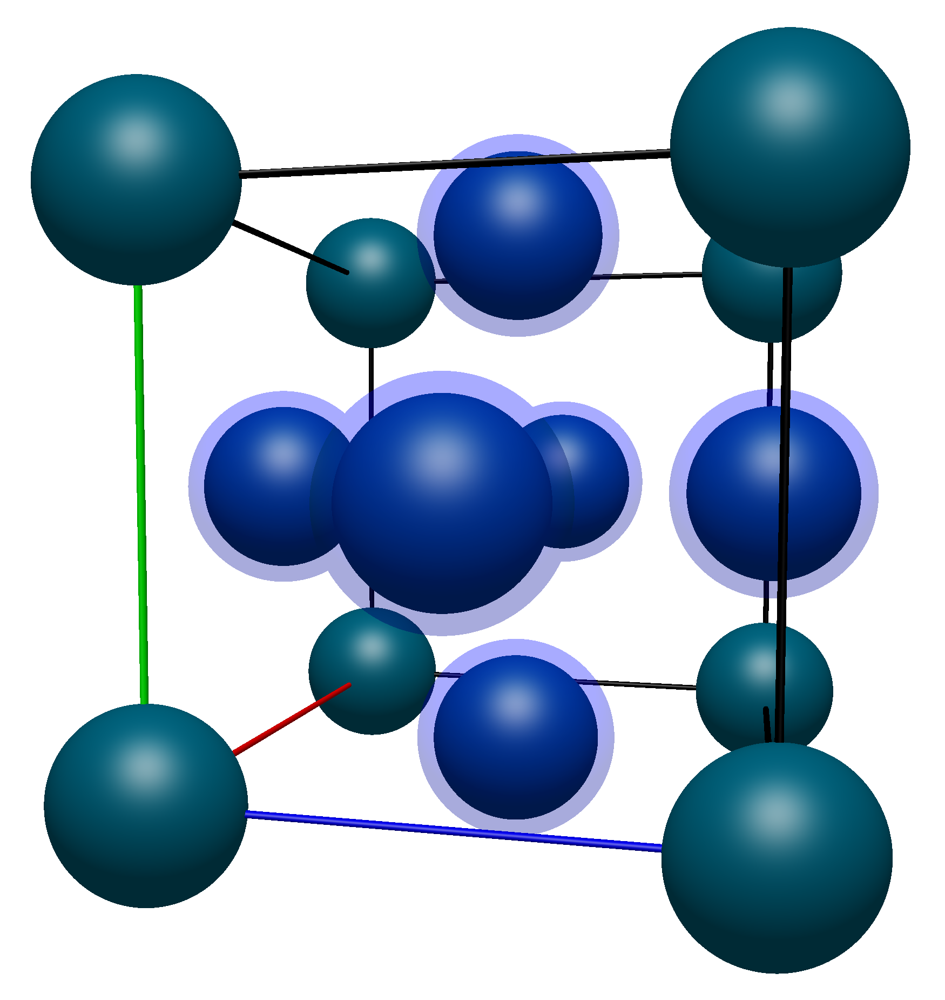
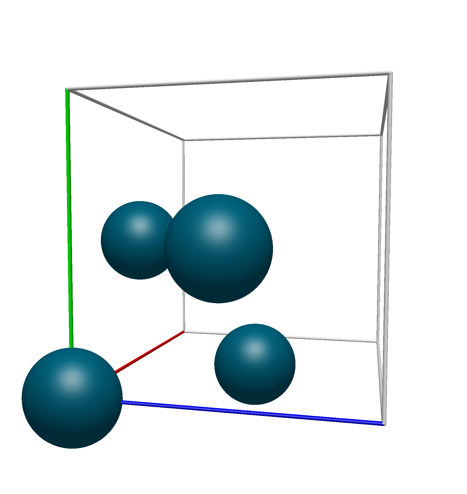
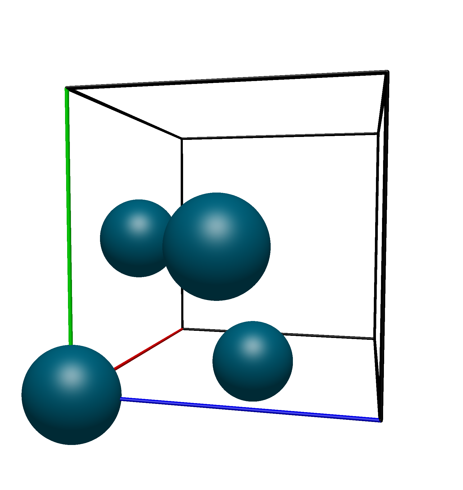

Crystal Menu#
The crystal menu contains many features useful for manipulating unit cells and crystal structures.
- Import Crystal from Clipboard
Open a dialog that allows you to import crystal structures from copied text. Supports multiple file formats (defaults to POSCAR).
- Add Unit Cell
Add a unit cell to the current document and open the Unit Cell Editor. (only if there is not a unit cell)
Note
The following options are only available if the document has a unit cell.
- Remove Unit Cell
Remove the unit cell from the current document.
- Edit Unit Cell
Open the Unit Cell Editor.
- Fill Unit Cell
Populate the unit cell, including translationally equivalent atoms. See Translational Equivalence for more information.
- Fill Translational Cell
Populate the unit cell, not including translationally equivalent atoms. See Translational Equivalence for more information.
- Wrap Atoms to Unit Cell
Take all atoms outside the unit cell and translate them into their equivalent position inside the unit cell.
- Rotate to Standard Orientation
Rotate the unit cell such that the cell matrix is in Hermite Normal Form.
- Scale Cell Volume
Apply a uniform scaling to the unit cell, and optionally translate the atoms as well.
- Build Supercell
Create a supercell using the current cell as the base unit cell.
- Reduce Cell (Niggli)
Perform a Niggli reduction on the current unit cell.
- Plot Theoretical XRD Pattern
Plot a theoretical x-ray diffraction pattern.
Warning
If you get an error regarding a missing genXrdPattern executable, you can try to download the executable from the GitHub repository and setting the GENXRDPATTERN_EXECUTABLE environment variable.
- Space Group
See Space Group Menu
- Plot Pair Distribution Function
Plot the pair distribution function for the current crystal.
Unit Cell Editor#
The unit cell editor is used for manipulating the unit cell.
{kind=link}

At the top of the unit cell editor are the lattice parameters \(A\), \(B\), \(C\), \(\alpha\), \(\beta\), and \(\gamma\). These either used to calculate the cell matrix, or can be calculated from the cell matrix. Below this is the cell matrix, which contains the three 3D lattice vectors, \(\textbf{a}_i = (a^x_i, a^y_i, a^z_i)\) that make up the cell matrix (denoted here as \(\mathbb{A}\)). Below the cell matrix is the fractional matrix, which is the inverse of the unit cell matrix (denoted \(\mathbb{A}^{-1}\)). Together, the product of these matrices yields the identity matrix (\(\mathbb{I}\)),
The fractional matrix can be used to transform atoms from their normal 3D coordinates (denoted \(r_i\)) into what are called fractional coordinates (denoted \(r^{\text{frac}}_i\)), which can then be turned back into their normal coordinates by multiplying by the cell matrix.
At the bottom of the unit cell editor is an option to transform the atoms with the unit cell. This will keep your atom positions at the same fractional coordinates, while their normal 3D coordinates are shifted and scaled by the new unit cell. The remaining buttons at the bottom will either apply your changes, revert your most recent change, or hide/close the unit cell editor.
Translational Equivalence#
A common tripping hazard when displaying crystal structures is the display of what are called translationally equivalent atoms. These are defined as atoms in a crystal structure which are separated by an integral translation along the lattice vectors. While this might seem complex at first, it can be very simply defined and shown, which we will do here.
For a mathematical description, imagine a unit cell with the following cell matrix (denoted \(\mathbb{A}\)):
The individual lattice vectors \(\textbf{a}_i = (a^x_i, a^y_i, a^z_i)\), or their integer multiples (e.g. \(1\times\textbf{a}_i\), \(-1\times\textbf{a}_i\), \(2\times\textbf{a}_i\), \(-2\times\textbf{a}_i\), etc.), can be used to translate or slide atoms around in space. To find the translationally equivalent atoms in a unit cell, you can take all of the atoms in the cell, apply positive (\(+\)) or negative (\(-\)) translations (possibly with an integer multiplier) with the lattice vectors, and then remove all of the atoms which are related by that translation.
As a visual demonstration of this, consider a the conventional unit cell of Palladium, which has a Face-Centered Cubic crystal structure. Below we show the unit cell produced with the Fill Unit Cell command and the unit cell matrix (\(\mathbb{A}\) from above):
{kind=link}
{kind=link}
Applying transformations to the atoms on the corners of the unit cell (highlighted in blue here)
{kind=link}

{kind=link}

The coordinates of these atoms are (in no particular order),
Atom Number |
X Pos. (Å) |
Y Pos. (Å) |
Z Pos. (Å) |
|---|---|---|---|
1 |
0.0000 |
0.0000 |
0.0000 |
2 |
3.8898 |
0.0000 |
0.0000 |
3 |
0.0000 |
3.8898 |
0.0000 |
4 |
0.0000 |
0.0000 |
3.8898 |
5 |
3.8898 |
3.8898 |
0.0000 |
6 |
3.8898 |
0.0000 |
3.8898 |
7 |
0.0000 |
3.8898 |
3.8898 |
8 |
3.8898 |
3.8898 |
3.8898 |
Using the lattice vectors
we can subtract them from the positions of atoms 2-4 (denoted \(r_i\)) and see that they all are translationally equivalent to atom 1:
The remaining corner atoms are a simple extension of this, but with multiple translations:
Now moving on to the face atoms, again highlighted in the image below.
{kind=link}

{kind=link}

Their coordinates are listed below (with numbering starting from 9 to avoid confusion with the corner atoms):
Atom Number |
X Pos. (Å) |
Y Pos. (Å) |
Z Pos. (Å) |
|---|---|---|---|
1 |
0.0000 |
0.0000 |
0.0000 |
9 |
0.0000 |
1.9449 |
1.9449 |
10 |
1.9449 |
0.0000 |
1.9449 |
11 |
1.9449 |
1.9449 |
0.0000 |
12 |
3.8898 |
1.9449 |
1.9449 |
13 |
1.9449 |
3.8898 |
1.9449 |
14 |
1.9449 |
1.9449 |
3.8898 |
One thing to note right off the bat is that none of the face atoms will be translationally equivalent to atom 1 as they all have components which are not equal to a lattice vector multiplied by an integer. For example, atom 9 can not be translated into atom 1
As such, we know that some of these atoms will need to remain in the translational unit cell. Applying the same formulas from above, we can see that atoms 12, 13, and 14 can be translated by the lattice vectors into atoms 9, 10, and 11.
Thus, we know that the translational unit cell contains only atoms 1, 9, 10, and 11. Using Avogadro 2’s Fill Translation Cell command, we see that this is the exact unit cell that we get:
{kind=link}

{kind=link}

Space Group Menu#
The Space Group dropdown supplies tools for interacting with the Space Group Library (Spglib) through Avogadro 2.
- Perceive Space Group
Determine the space group of the current crystal structure.
- Reduce to Primitive
Reduce the current unit cell to the primitive unit cell.
- Conventionalize Cell
Take a primitive unit cell and turn it into its conventional form.
Primitive vs. Conventional Cell
{kind=link}
{kind=link}
- Symmetrize
Take a cell that is not perfectly symmetric, reduce it to its primitive form, and idealize it.
- Reduce to Asymmetric Unit
Reduce the unit cell to all atoms which can not be represented by the point group’s symmetry operations.
- Set Tolerance
Set the default tolerance for the other operations in the menu.